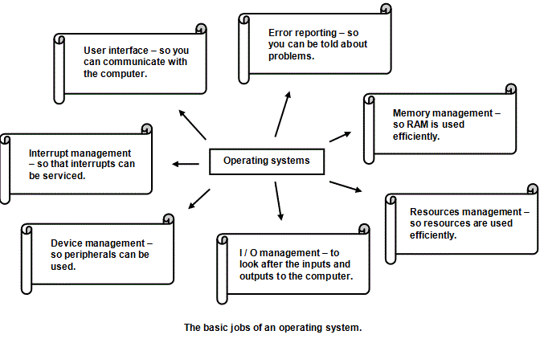

<div id="jsn-maincontent" class="span9 order1  row-fluid">
					<div id="jsn-maincontent_inner">
						<div id="jsn-centercol"><div id="jsn-centercol_inner">
									<div id="jsn-mainbody-content" class=" jsn-hasmainbody">
								<div id="jsn-mainbody-content-inner1"><div id="jsn-mainbody-content-inner2"><div id="jsn-mainbody-content-inner3"><div id="jsn-mainbody-content-inner4" class="row-fluid">
								
										
								
								<div id="jsn-mainbody-content-inner" class="span12 order1 ">
		
										<div id="jsn-mainbody">
										<div id="system-message-container">
	</div>

										<div class="item-page" itemscope itemtype="https://schema.org/Article">
	<meta itemprop="inLanguage" content="en-GB" >
	
		
						
		
	
	
		
								<div itemprop="articleBody">
		<p></p>
<h1 style="text-align: center;">The need for and function of the operating system kernel</h1>
<div class="NormalContentHeading"><strong>Features of Operating Systems</strong></div>
<div class="NormalContentHeading"><span class="NormalContent">An operating system is "the name given to the collection of systems software that manages the computer". The actual facilities provided by an operating system will very much depend upon the design and type of facilities needed by a particular set-up. The needs of the following systems will all vary.</span></div>
 
<ul>
<li style="list-style-type: none;">
<ul style="list-style-type: disc;">
<li class="NormalContent">A batch processing system such as a bank-statement producing system.</li>
<li class="NormalContent">A real-time system such as a system controlling a plane.</li>
<li class="NormalContent">A personal computer.</li>
<li class="NormalContent">An embedded system as found in, for example, a microwave or dishwasher.</li>
<li class="NormalContent">A network with many users, as found in many schools.</li>
<li class="NormalContent">A tablet.</li>
<li class="NormalContent">A mobile phone.</li>
</ul>
</li>
</ul>
<p><span class="NormalContent">For example, a real-time operating system may not have any need for memory management routines because the program and data to run a washing machine are held in ROM. There is no need to transfer data between RAM and secondary storage. <br> </span> <br><strong><span class="NormalContentHeading">The features of personal computer operating systems </span></strong><br> <span class="NormalContent">A PC operating system is a collection of programs and utilities. These manage the computer's hardware and software. The operating system looks after the basic functions of the computer. A computer is made up of a number of different components that have been connected together. Once connected to make a 'computer', however, the components don't start working together until an operating system takes control.&nbsp;</span>The operating system, then, manages the basic functions of the computer. The jobs done by an operating system can be summarised using the following diagram.</p>
<center></center><center></center>
<p><span class="NormalContent"> The basic functions of an operating system include the following:</span></p>
<ul>
<li style="list-style-type: none;">
<ul style="list-style-type: disc;">
<li class="NormalContent">Making sure all the parts of the computer can work together.</li>
<li class="NormalContent">Making sure that the user can interact with the computer by providing an interface.</li>
<li class="NormalContent">Ensuring that any errors in the computer are reported to the user, usually with messages on the VDU.</li>
<li class="NormalContent">Managing files on the hard drive and in memory and allowing the user to manage files by providing a file management utility program.</li>
<li class="NormalContent">Making sure that data can be entered into the computer, displayed or saved by providing software that allows data input and output.</li>
<li class="NormalContent">Providing utility programs such as FORMAT DISK, FILE MANAGEMENT or DEFRAG.</li>
<li class="NormalContent">'Scheduling'. The operating system provides programs that ensure the resources of the computer such as CPU time, are used as efficiently as possible by all the different users and the different jobs.</li>
</ul>
</li>
</ul>
<p class="QuestionStyle"><strong>The kernel</strong><br>The kernel is the central part of the operating system software. It is loaded into the main memory when a computer is first booted-up and stays in the memory until the computer is powered down. It can be thought of as the main program that controls all of the other programs in a computer along with the hardware. It provides and manages the resources in a computer system, allowing applications to access and use these resources. The applications can never request these resources directly. They must go through the kernel. This protects the resources from any inadvertent accidents by the applications.</p>
<ul>
<li style="list-style-type: none;">
<ul>
<li class="QuestionStyle"><strong>Allocating space (memory management).</strong> The kernel is responsible for allocating memory space to programs and data, and recovering the memory when it is no longer needed. When you open a program, the kernal decides where it is going to put it in your RAM so that it doesn't interfere with other programs. You may have lots of programs running at the same time and lots of data files open. They must all be allocated space so that they can work without corrupting the other applications or data files, and the kernel is responsible for this, and keeping a record of where everything is. When you close a program, the kernal 'reclaims' the memory that the program used by updating its records. That space can then be allocated to another program when needed. If any programs are not running correctly, their access to memory is ring-fenced, so they can't interfere with memory locations not allocated to it and therby memory is protected.</li>
<li class="QuestionStyle"><strong>Backing store management and the file system.</strong> The kernel is in charge of moving data from secondary storage devices such as a USB flash drive or a hard disk into main memory, and back again. It also keeps a file system for each storage device up-to-date so that it can find existing files, allocate space to new ones and keep track of all available space.</li>
<li class="QuestionStyle"><strong>Hardware access.</strong> The kernal provides an interface between an application needing access to e.g. the DVD player and the actual DVD player itself. It does this by forwarding requests from the application to the software drivers that control whatever hardware is needed. A driver is simply the software program that controls a particular hardware device and acts as a buffer between the application and the kernal. Every hardware component has a driver that sits between the operating system kernal and the actual hardware device.</li>
<li class="QuestionStyle"><strong>Interrupts, processes and multi-tasking.</strong>&nbsp;The kernel sets up the interrupt system so that the CPU can do many things apparently at the same time. An interrupt is a signal sent to the CPU that tells the CPU that an event has happened, so it needs to stop what it is doing and service the event. Typical events that might cause some software or hardware to send an interrupt include a piece of hardware suddenly not working, a printer needing a bit more data from a file that it is printing out or a signal from a piece of software that tells the CPU it needs do a bit more processing using the CPU. The system of interrupts set-up by the kernel allows the CPU to work on many jobs (called 'processes') at <strong><em>apparently</em> </strong>the same time, called 'multi-tasking'. <span style="line-height: 16.3636360168457px;">The key word here is&nbsp;</span><strong style="line-height: 16.3636360168457px;"><em>apparently</em>&nbsp;</strong><span style="line-height: 16.3636360168457px;">because the CPU can only ever work on one job at a time. However, it is so fast, and can switch between dozens of jobs so quickly, that it can seem like the CPU is doing many jobs at the same time.&nbsp;</span>Every time the CPU gets an interrupt, it first of all decides whether it will work on the interrupt (depending on what it is currently doing, what other interrupts it has received and how important the interrupt is). Then it saves whatever it is doing in an area of memory called a 'process block'. Then it works on the routine that services whatever interrupt has happened and finally it loads back in whatever it was doing before the interrupt happened and carries on from wherever it was up to.&nbsp;<span style="line-height: 1.5;">&nbsp;</span></li>
</ul>
</li>
</ul>
<p class="QuestionStyle"><strong>Operating system versus kernel?</strong><br>It can be a little confusing understanding the difference between the operating system and the kernel at first. The kernel is the central part of and owned by the operating system. Everything that the kernel does is therefore part of what the operating system does. The kernel&nbsp;<span style="line-height: 16.3636360168457px;">provides and manages the hardware resources in a computer system, allowing applications to access and use these resources. It does this by allocating memory, managing backing storage, controlling access to hardware and dealing with interrupts, managing processes and managing how the CPU is used. </span></p>
<p class="QuestionStyle"><span style="line-height: 16.3636360168457px;">An operating system is a collection of programs, including the kernel, that mange the whole computer. There are programs that are part of the operating system but <strong><em>not</em> </strong>part of the kernel, including the program that provides the user interface, the program that provides automatic system updates, system reporting, developer tools and translators and so on.</span></p>
<p class="QuestionStyle"></p>	</div>

	
							</div>

									</div>
				
							</div>
							
				        							
							
							</div></div></div></div></div>			
							
							
		        				</div></div> 
				</div></div>